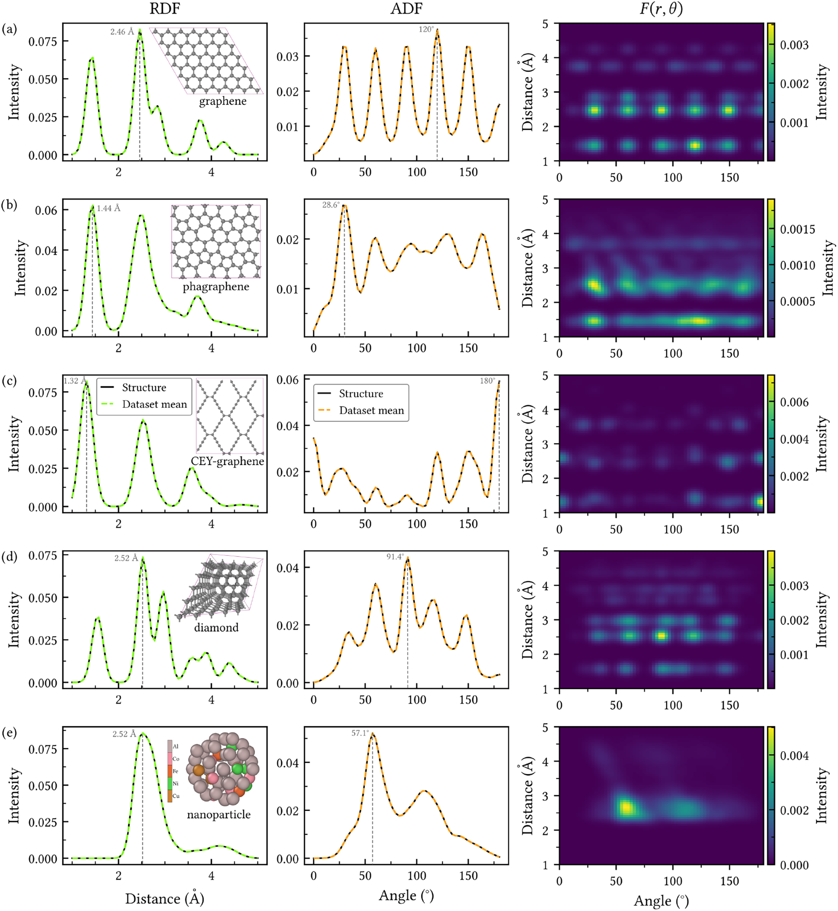
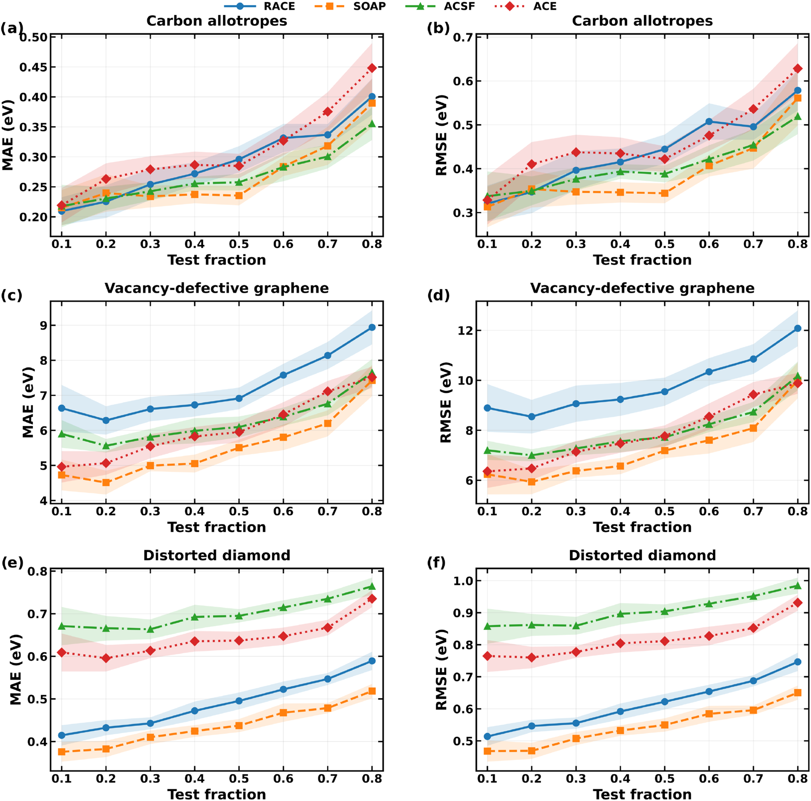
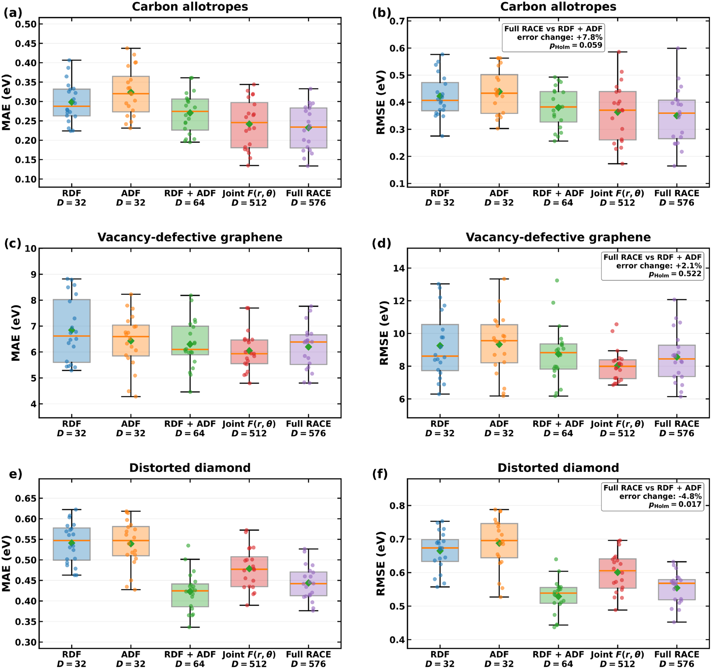
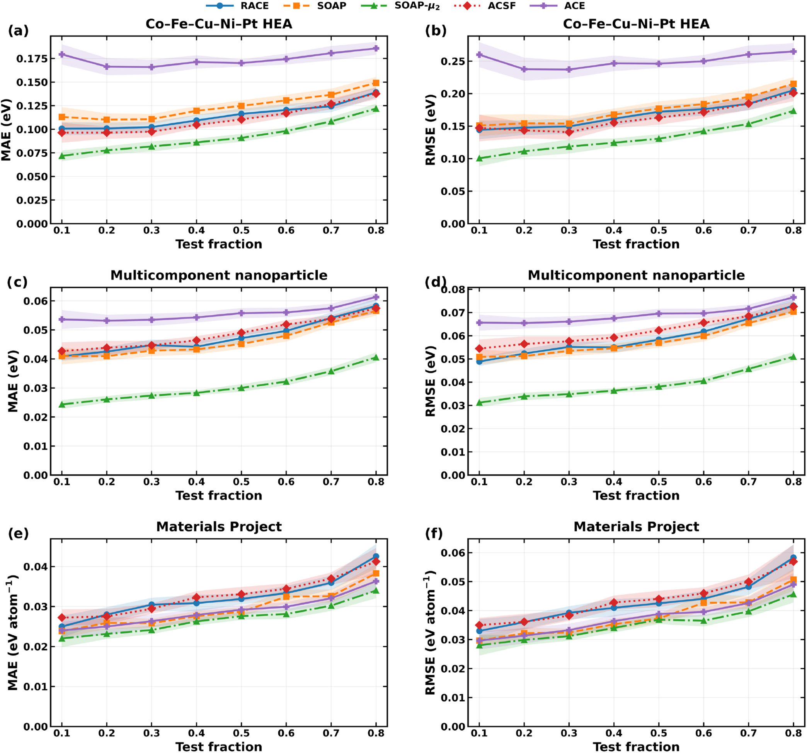
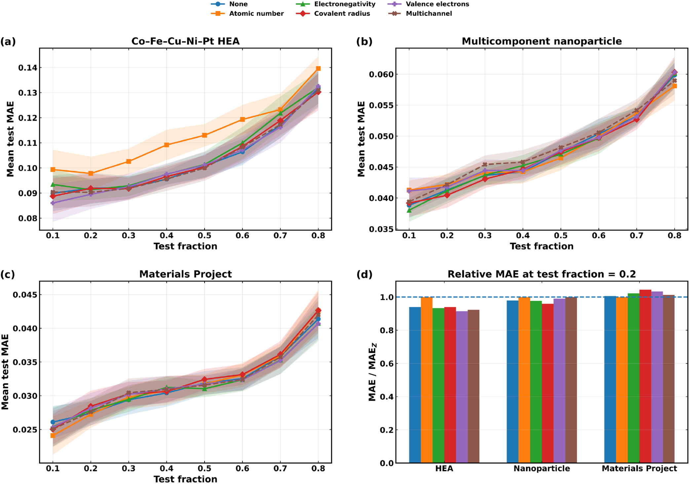
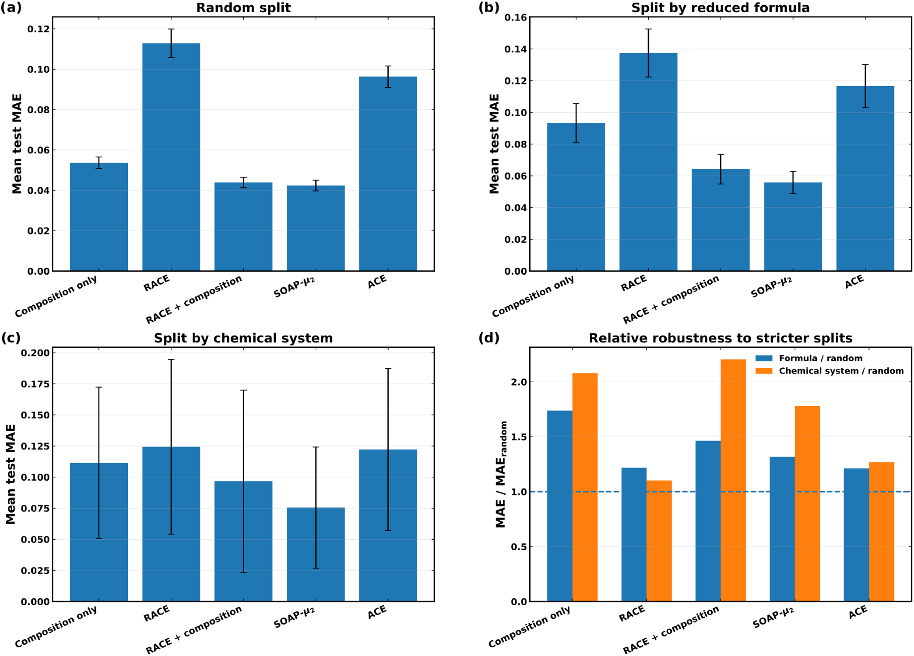
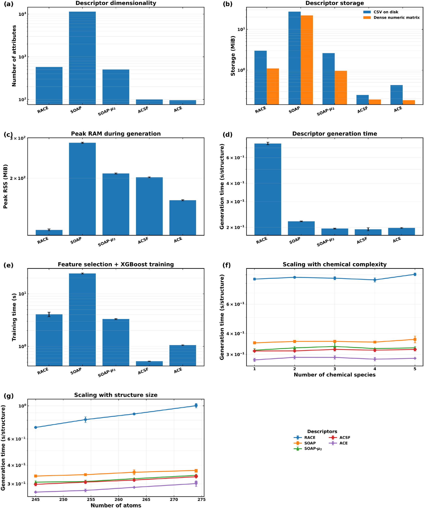

RACE：用可拆分的距离、角度与联合分布，构造透明的原子结构表示
论文原文 ↗Raphael M. Tromer 等，RACE: A Modular and Interpretable Radial–Angular Correlation Descriptor for Atomistic Machine Learning，Journal of Chemical Theory and Computation，2026。DOI：10.1021/acs.jctc.6c01111｜原始 PDF
让机器从原子坐标预测能量，首先要决定怎样表示结构。同一个晶体平移、旋转或改变原子编号后，物理性质相同；输入特征也应保留这种对称性。同时，研究者希望表示既准确，又容易解释、控制维度和计算成本。这些目标之间存在取舍。
RACE 将原子邻域直接拆成三个数值对象：距离分布、角度分布，以及距离与角度共同出现的二维图。元素信息由可更换的权重加入。论文围绕这套模块化设计，比较预测表现、组件作用、化学编码和计算代价，明确它作为透明固定描述符的实用位置。
方法怎样做：从原子邻域生成可以查看和组合的分布
输入包括原子种类、坐标，以及周期结构的晶胞。对每个中心原子，先收集 4.5 Å 内的邻居，并用平滑截断函数让邻居贡献在边界逐渐降到零。随后构造径向分布 RDF：每个邻居距离通过高斯平滑分配到附近网格，得到“哪些距离常出现”的曲线。角向分布 ADF 对两个邻居与中心原子构成的夹角作同样处理，记录“哪些夹角常出现”。
分别统计距离和角度，还可能丢掉搭配关系。例如，相同的两类距离可以分别对应不同角度。RACE 的联合图把每个邻居对的夹角及两条距离累积到“距离—角度”网格，显式保留它们共同出现的位置。距离、角度不随整体平移旋转变化，对邻居求和又消除了原子编号的影响。

原图 1｜每行对应一种结构，三列依次为 RDF、ADF 和联合分布。规则碳网络、金刚石及多组分纳米颗粒形成不同峰形，联合图将距离与角度的对应关系直接呈现出来。
化学种类通过元素映射进入权重：默认使用归一化原子序数平方根，也可换成电负性、共价半径、价电子数，或者使用常数只保留几何。多通道方案将几种映射分别生成的表示拼接。使用单个标量映射时，新增加一种元素不会新增一整组元素对通道，维度由网格设置决定。
论文采用 16 个径向点和 16 个角向点，三部分合计每原子 288 项。再对结构中所有原子的特征分别求均值和标准差，得到 576 维结构向量：均值表示典型环境，标准差补充环境的差异程度。至此完成的是确定性的几何和化学处理。
学习发生在下一步。作者将结构向量交给 XGBoost，用逐轮增加的决策树拟合能量；主要对照在训练数据内筛选至多 50 项特征，再使用相同回归设置预测测试结构。空位石墨烯分支学习 DFTB+ 缺陷能，高熵合金、纳米颗粒和 Materials Project 分支分别使用各自的能量标签。不同任务通过相同的表示和评估流程连接起来。
主要结果：表示透明，实际收益随体系和输入信息变化
结构类型决定表示的表现，联合项提供可直接检验的组件
作者将 RACE 与 SOAP、压缩 SOAP-μ₂、ACSF 和固定基函数 ACE 比较。SOAP 将邻域原子写成平滑密度，再经基函数展开构建关联；ACSF 使用预设距离和角度对称函数，ACE 则用原子簇基函数表达环境。所有描述符使用共同的数据划分和训练内特征选择，主要学习曲线重复划分 20 次。

原图 2｜三行依次为碳同素异形体、空位石墨烯和扰动金刚石，左列是平均绝对误差，右列是更重视大偏差的均方根误差。横轴测试比例越大，训练数据越少。
碳同素异形体上，各方法处于相近误差范围；空位石墨烯和扰动金刚石中，SOAP 在多数划分下较准确，RACE 在金刚石中优于所测 ACSF 与 ACE。RACE 对多种结构具有实用预测能力，方法排序随任务改变。
模块化设计使作者能够直接拿掉或组合 RDF、ADF 和联合图，检验每部分带来什么。只用联合图已能取得有竞争力的结果；在 RDF+ADF 上再加入联合图时，碳同素异形体的平均均方根误差降低约 7.8%，空位石墨烯降低约 2.1%，金刚石则增加约 4.8%。联合关系的信息价值与增加特征后的学习表现共同依赖体系。

原图 3｜横轴是组件组合及维度，散点和箱形图展示重复划分结果，菱形为均值。完整表示与 RDF+ADF 的对比，显示联合项在三个任务中的不同增量。
多组分任务同时需要合适的化学映射与组成信息
在 Co–Fe–Cu–Ni–Pt 高熵合金、多组分纳米颗粒和 Materials Project 子集上，压缩 SOAP-μ₂ 给出最低误差。它通过化学压缩控制通道规模，同时保留密度关联表示的预测能力，是 RACE 的重要比较对象。

原图 4｜三行依次为高熵合金、纳米颗粒和 Materials Project。绿色 SOAP-μ₂ 在这些任务中误差最低；不同体系的误差单位随预测目标标注。
RACE 的元素权重可以按任务调整。高熵合金中，价电子数或多通道方案在部分划分下改善默认原子序数编码；纳米颗粒的几种方案则表现接近。可配置化学编码的作用，是让研究者用同一几何结构试验不同化学信息如何进入模型。

原图 5｜a–c 比较元素映射，d 将误差归一化到原子序数方案。低于 1 表示改善，各体系适合的映射有所不同。
Materials Project 的比较进一步区分局部环境和全局化学计量。作者分别训练仅输入元素比例、仅输入 RACE，以及两者结合的模型。加入显式组成后，RACE 的形成能误差明显改善，接近 SOAP-μ₂。随后按约化化学式或元素集合整组留出，测试新组成和新元素组合；RACE 加组成继续优于单独 RACE，而 SOAP-μ₂ 保持最低绝对误差。局部加权环境与整晶体元素比例提供互补信息，后者是宽化学空间泛化的重要输入。

原图 6｜a–c 依次是随机、按约化化学式、按元素集合划分；d 比较分组误差相对随机误差的变化。绝对误差显示预测水平，变化倍数显示任务转移带来的影响。
固定维度和低内存构成实用特点，生成时间有独立代价
作者将表示维度、存储、峰值内存、生成时间和训练时间分别测量。RACE 的 576 维表示较紧凑，描述符生成的峰值内存最低，单标量形式的维度不随元素种类增长。当前 Python 实现显式枚举邻居对，生成时间在比较中最高，因此它体现的是低内存与透明组织的优势。

原图 7｜a–e 分开展示资源开销，f 增加元素种类，g 增加原子数。单标量 RACE 保持固定维度，耗时则随原子和邻居关系增加。
对领域的贡献
RACE 将原子表示中的几何关联和化学权重变成可以直接查看、替换和消融的组件。论文由此把描述符选择中的取舍具体化：联合项的增益取决于体系，化学编码可以调整，宽化学空间需要显式组成，而内存、时间与预测误差应分别评价。
这与作者强调的定位相互呼应：RACE 提供一种简单、可操作的固定结构表示，与系统性的密度关联描述符互补。研究者既可用它进行能量回归，也能借助清楚的组件组织判断，某项任务从距离、角度、化学映射和全局组成中分别获得了什么。
附：完整原始摘要中文翻译
原子级机器学习（ML）表示涉及预测精度、物理可解释性、描述符维度与计算成本之间的权衡。本文提出径向—角向关联描述符（RACE），这是一种由径向分布、角向分布和显式联合径向—角向图构成的模块化表示。化学身份通过可互换的标量或多通道权重函数纳入，而不要求必须建立一套元素对通道。我们采用共同的训练—测试划分、仅使用训练集的特征选择、重复评估和不确定性估计，将 RACE 与常规原子位置平滑重叠描述符（SOAP）、压缩 SOAP-μ₂、原子中心对称函数（ACSF）以及固定基函数的原子簇展开（ACE）表示进行比较。RACE 在结构和化学组成多样的体系中具有实用的预测精度，但并不总是优于其他表示。压缩 SOAP 在化学异质的基准任务中尤其准确，而在广泛的 Materials Project 化学空间中实现稳健泛化，需要显式的组成特征。对径向、角向和联合通道的直接消融进一步显示，联合径向—角向项的增量价值依赖具体体系。因此，RACE 的主要实用特征是透明的组件结构、可配置的化学编码、在标量加权形式下不依赖元素种类数的描述符维度，以及生成描述符时较低的峰值内存。由此，RACE 被定位为一种简单、易于操作的结构表示，与系统性的密度关联描述符形成补充，而非普遍替代后者。